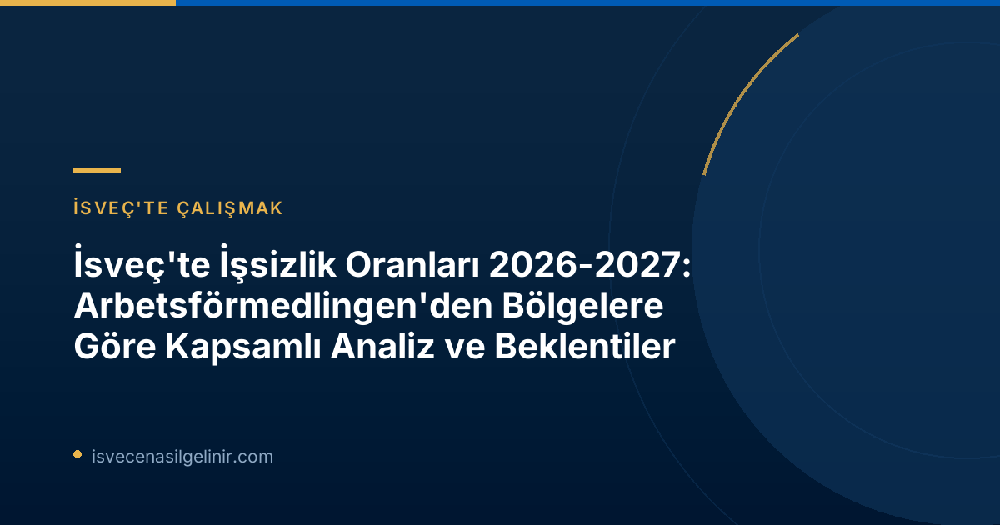

Genel İşsizlik Görünümü ve Ekonomik Toparlanma
Arbetsförmedlingen'in "Regionala Utsikter" raporu, İsveç ekonomisinin sağlamlaşmasıyla birlikte işsizliğin azaldığını, ancak bahar aylarında toparlanmanın yavaşladığını belirtiyor. Ülkenin çoğu ilinin bu yıl düşük ekonomik dönem öncesi işsizlik seviyelerine ulaşması beklenirken, Stockholm ve Västra Götaland'ın ancak 2027'de bu seviyeleri yakalayabileceği öngörülüyor.
Önemli İşsizlik Beklentileri
- Genel Düşüş: Ülke genelinde işsizlik oranlarında düşüş bekleniyor.
- Bölgesel Farklılıklar: İşsizlik oranlarındaki bölgesel farklılıkların devam edeceği vurgulanıyor.
- Büyük Şehirler: Stockholm ve Västra Götaland bölgeleri, düşük ekonomik dönem öncesi seviyelere 2027 yılında ulaşacak.
Bölgelere Göre İşsizlik Oranlarındaki Farklılıklar
Arbetsförmedlingen raporuna göre, İsveç genelinde işsizlik oranları düşse de, bölgeler arasındaki farklılıklar sürecek. Bugün en yüksek işsizlik oranına sahip olan Skåne, Västmanland, Södermanland ve Gävleborg illerinin 2027'de de en yüksek seviyelerde kalması bekleniyor. Buna karşılık, Norrbotten, Gotland, Jämtland ve Västerbotten gibi bugün en düşük işsizliğe sahip olan illerin ise bu konumlarını koruyacağı tahmin ediliyor.
2026 yılında ise işsiz sayısında en büyük düşüş Västerbotten ve Blekinge illerinde yaşanması öngörülüyor. Bu durumun kısmen bölgeden dışarıya göçten, ancak aynı zamanda yeşil sanayi ve savunma faaliyetlerindeki yatırımlardan kaynaklandığı belirtiliyor. Arbetsförmedlingen analiz şefi vekili Lars Lindvall, "Örneğin Skåne'de işsizlik, Norrbotten'deki işsizliğin iki katından daha fazla. Rekabetin daha az olduğu ve işlerin daha fazla olduğu mesleklere ve bölgelere başvurulduğunda iş bulma şansı artıyor" ifadelerini kullandı. Bu veriler, İsveç'e göç etmeyi düşünenlerin, özellikle sverigemedborgarskapsprov.com adresinden alacakları bilgilerle İsveç vatandaşlık sürecine hazırlanırken, iş imkanlarını da göz önünde bulundurarak bölgesel tercih yapmalarının önemini gösteriyor.
| İşsizliğin En Yüksek Olduğu Bölgeler (2027 Beklentisi) | İşsizliğin En Düşük Olduğu Bölgeler (2027 Beklentisi) |
|---|---|
| Skåne | Norrbotten |
| Västmanland | Gotland |
| Södermanland | Jämtland |
| Gävleborg | Västerbotten |
İşverenler İçin Yeterlilik Sorunu ve Çözüm Önerileri
Rapora göre, işverenler hala doğru yetenekleri bulmakta zorlanmaya devam ederken, birçok iş arayan talep edilen yeteneklerden yoksun durumda. Ekonomi güçlendikçe bu sorunların daha da artabileceği belirtiliyor. Aynı zamanda, son yıllarda her üç ilden birinde işgücüne katılan nüfusun azalması, yetenek eksikliğini daha da büyütme riski taşıyor.
Lars Lindvall, bu "eşleştirme sorunlarını" azaltmak için daha fazla iş arayanın işverenler tarafından talep edilen yetenekleri, örneğin eğitim yoluyla edinmesi gerektiğini belirtiyor. Lindvall, "Aynı zamanda, işgücü piyasasından daha uzakta olan kişilere kapılarını açan daha fazla işverene ihtiyaç var. Bu sayede daha fazla iş doldurulabilir ve daha fazla insan iş sahibi olabilir" diyerek çözüm önerilerini sundu.
Yetenek Açığını Kapatma Stratejileri
- Eğitim ve Mesleki Gelişim: İş arayanların talep edilen yetkinlikleri kazanması için eğitimlere yönelmesi.
- İşverenlerin Rolü: İşverenlerin, işgücü piyasasından daha uzakta kalan adaylara fırsatlar sunması.
- Nüfus Azalışı: İşgücüne katılan nüfustaki azalışın yetenek açığını derinleştirme riski.
Arbetsförmedlingen'in "Regionala Utsikter" Raporu Hakkında
"Regionala Utsikter" raporu, Arbetsförmedlingen'in tahmin faaliyetlerinin bir parçası olarak yılda iki kez, Haziran ve Aralık aylarında yayımlanmaktadır. Ülke genelindeki gelişim hakkında daha derinlemesine bilgi için "Arbetsmarknadsutsikterna våren 2026" raporuna bakılabilir. Raporda yer alan diyagramların ve anket sonuçlarının dayanağı olan "Lediga jobb och rekryteringsbehov (LOR)" araştırması, SCB (İsveç İstatistik Kurumu) işbirliğiyle işletmeler, belediyeler, bölgeler ve devlet kurumlarındaki işyerlerine yönelik yürütülen bir örneklem anketidir. Raporun tüm detaylarına ve ek bilgilere Arbetsförmedlingen'in "Analyser och prognoser" sayfasından ulaşılabilir.
Referanslar:
İsveç'te Kariyer Fırsatlarını Yakalayın!
İsveç iş piyasasındaki güncel gelişmelerden haberdar olmak, doğru bölgelerde doğru iş fırsatlarını değerlendirmek ve İsveç'teki yaşamınıza sorunsuz bir başlangıç yapmak için rehberlerimizi inceleyin.